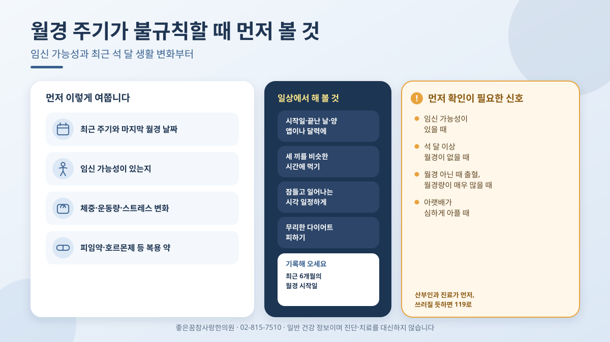

이종호 한의사 감수좋은꿈참사랑한의원 대표원장 (한의사 면허번호 19769)발행 2026-11-26 · 수정 2026-11-26
이 글의 차례
달력 앱에 빨간 점을 찍다가 손이 멈춥니다. 지난달은 스무하루 만에 왔는데, 이번 달은 벌써 마흔 날째 소식이 없습니다. 기다리는 것도 아니고 걱정하는 것도 아닌 마음으로, 하루에도 몇 번씩 아랫배에 신경이 쓰입니다.
월경 주기가 들쭉날쭉할 때 제가 가장 먼저 여쭙는 것은 세 가지입니다. 임신 가능성이 있는지, 최근 석 달 사이 체중·잠·스트레스·운동에 큰 변화가 있었는지, 그리고 드시는 약이 있는지입니다. 이 셋을 확인하면 다음에 무엇을 살필지 순서가 보입니다.
다만 석 달 넘게 월경이 없거나, 월경이 아닌 때 출혈이 있거나, 패드를 한 시간마다 갈아야 할 만큼 양이 많다면 한의원보다 산부인과 검사가 먼저입니다. 원인을 확인한 뒤에 생활 리듬과 몸 상태를 함께 살펴도 늦지 않습니다.
진료실에서 이런 말씀을 자주 듣습니다. 병원에 가 보자니 별일 아닌 것 같고, 그냥 두자니 마음이 계속 쓰인다고요. 원래 불규칙한 체질이라는 말을 오래 듣다 보니 이제는 물어볼 생각도 안 했다는 분도 계십니다.
주기가 흔들린다는 것은 생각보다 많은 것을 흔듭니다. 여행 날짜를 잡을 때도, 중요한 발표를 앞두고도, 임신을 준비할 때도 마음 한구석이 불안하지요. 그 불안을 혼자 달래 오신 시간이 길었을 거라 생각합니다.
왜 월경 주기가 흔들릴까요
월경 주기는 뇌와 난소, 자궁이 주고받는 신호로 만들어집니다. 그 신호는 잠과 끼니, 체중, 마음의 긴장에 꽤 민감합니다. 몸이 버거운 시기라고 느끼면 배란을 잠시 미루기도 하는데, 그러면 월경도 함께 늦어집니다.
일반적으로 21일에서 35일 사이의 주기는 정상 범위로 봅니다. 매달 하루 이틀 차이가 나는 것도 흔한 일입니다. 걱정이 되는 것은 주기가 이 범위를 자주 벗어나거나, 달마다 일주일 넘게 들쭉날쭉한 경우입니다.
한의학에서는 월경을 기혈의 흐름으로 봅니다. 혈이 넉넉하고 순환이 고르면 때맞춰 오고, 혈이 부족하거나 어딘가에서 막히면 늦어지거나 양이 줄어든다고 설명하지요. 몸이 차거나, 긴장이 오래 쌓이거나, 소화가 약해 혈을 만들 힘이 부족한 경우를 함께 살핍니다.
실제로 진료실에서 보면 원인이 하나인 경우는 드뭅니다. 시험이나 이직으로 잠이 줄고, 끼니를 거르다 체중이 빠지고, 마음까지 긴장한 시기가 겹칠 때 주기가 크게 흔들리는 분이 많습니다.
생활에서 흔히 겹치는 원인
갑자기 체중을 많이 줄였거나 늘었을 때, 운동량을 짧은 기간에 크게 늘렸을 때 주기가 달라질 수 있습니다. 체중 변화와 주기의 관계는 체중이 갑자기 늘거나 줄고 나서 생리 주기가 불규칙해졌을 때는 어떻게 하나요?에 따로 적어 두었습니다.
야근과 밤샘, 교대 근무처럼 잠드는 시각이 매일 바뀌는 생활도 주기를 흔듭니다. 연말처럼 일정이 몰리는 시기에 늦어지는 경우는 연말에 바쁘게 지낸 뒤 생리가 늦어질 때는 어떻게 살피나요?를 함께 보셔도 좋습니다.
피임약이나 호르몬제를 먹기 시작했거나 끊은 뒤, 출산이나 수유 뒤에도 한동안 주기가 달라질 수 있습니다. 이런 약과 시기는 꼭 알려 주세요. 약은 처방한 의사와 상의 없이 끊거나 바꾸지 않습니다.
검사로 확인해야 하는 원인
갑상선 기능 이상, 다낭성난소증후군, 프로락틴이라는 호르몬의 이상, 자궁근종이나 내막의 변화처럼 검사가 필요한 원인도 있습니다. 이런 원인은 증상만으로 가려내기 어렵습니다. 그래서 주기 문제가 석 달 넘게 이어지면 산부인과 검사를 먼저 권해 드립니다.
여드름이 갑자기 늘거나 털이 많아지고 체중이 쉽게 느는 변화가 함께 있다면 다낭성난소증후군을, 이유 없이 체중이 줄고 손이 떨리거나 늘 피곤하다면 갑상선 쪽을 떠올려 볼 수 있습니다. 어디까지나 검사를 받아 볼 까닭일 뿐, 짐작으로 결론 내리지는 않습니다.
검사에서 이상이 없다는 말을 들으면 안심이 되면서도, 그럼 왜 이런지 답답해지는 분이 많습니다. 저는 그때부터가 생활과 몸의 리듬을 함께 들여다볼 차례라고 생각합니다. 검사 결과지는 버리지 말고 가져와 주세요.
주기와 함께 월경통이 심해졌다면 그것도 중요한 단서입니다. 통증을 어떻게 나누어 보는지는 생리통이 심할 때 한의원에서는 무엇을 먼저 묻고, 언제 병원 검사가 필요한가요?에 정리해 두었습니다.
나이에 따라 '불규칙'의 뜻이 다릅니다
같은 들쭉날쭉한 주기라도 열다섯 살과 마흔여덟 살은 이야기가 다릅니다. 그래서 저는 주기를 여쭙기 전에 언제 초경을 하셨는지, 최근 몇 년 동안 주기가 어떻게 변해 왔는지부터 듣습니다.
- 초경 뒤 몇 해: 배란이 아직 고르지 않아 주기가 들쭉날쭉한 경우가 흔합니다. 양이 너무 많거나 석 달 넘게 없으면 소아청소년과나 산부인과 확인이 먼저입니다.
- 20~30대: 주기가 자리 잡은 뒤에 흔들린다면 생활 변화, 약, 검사가 필요한 원인을 차례로 살핍니다. 임신 준비 중이라면 더 꼼꼼히 기록해 봅니다.
- 40대 중반 이후: 폐경으로 넘어가며 주기가 짧아졌다 길어졌다 하는 일이 흔합니다. 밤에 땀이 나거나 얼굴이 달아오르고 잠이 얕아지는 변화가 함께 오기도 합니다.
폐경 이행기라도 출혈이 너무 많거나 한 달에 여러 번 나오거나, 폐경 뒤 다시 출혈이 있다면 산부인과 확인이 필요합니다. 나이 탓으로만 넘기지 않으셨으면 합니다.
예를 들면 이런 경우입니다
실제 어느 분의 이야기가 아니라, 진료실에서 자주 보는 모습을 바탕으로 그려 본 장면입니다.
예를 들어 시험을 앞두고 몇 달 동안 새벽까지 공부하며 끼니를 자주 거른 경우가 있습니다. 주기가 마흔 날을 넘기고 양도 줄었다면, 저는 주기보다 먼저 잠드는 시각과 아침 식사를 여쭙습니다. 몸이 먼저 숨 돌릴 틈이 필요한 때일 수 있으니까요.
예를 들어 운동을 시작하고 석 달 사이 체중이 크게 빠졌는데 월경이 점점 늦어진 경우도 있습니다. 이때는 운동 강도와 먹는 양의 균형을 함께 보고, 석 달 넘게 없다면 산부인과 검사를 먼저 안내합니다.
예를 들어 마흔 중반을 넘기며 주기가 짧아졌다 길어졌다 하고, 밤에 땀에 젖어 깨는 날이 늘어난 경우도 있습니다. 폐경 이행기의 변화일 수 있지만, 출혈 양이 많다면 산부인과 확인을 먼저 받으시도록 하고 잠과 체온 조절을 함께 살핍니다.
소화와 대변을 왜 같이 물을까요
월경 이야기를 하러 오셨는데 대변을 며칠에 한 번 보시는지 여쭈면 의아해하시는 분이 많습니다. 한의학에서는 아랫배의 순환을 하나로 보고, 대소변은 어떤 이유로 오시든 몸의 리듬을 보는 기본 단서이기 때문에 이 질문을 빠뜨리지 않습니다.
변비가 오래가면 아랫배가 늘 묵직하고, 월경 전후로 더 불편해진다는 분이 많습니다. 반대로 찬 것을 먹으면 바로 설사하는 분은 몸이 차고 소화의 힘이 약한 쪽을 함께 살핍니다. 잘 먹고 잘 내보내는 일은 혈을 만드는 바탕이라고 봅니다.
스스로 점검해 보세요
- 최근 석 달 동안 주기가 21일보다 짧거나 35일보다 긴 달이 있었다
- 달마다 시작일이 일주일 넘게 차이 난다
- 최근 석 달 사이 체중이 눈에 띄게 늘거나 줄었다
- 잠드는 시각이 날마다 다르거나, 밤샘·야근이 잦다
- 대변을 사흘 넘게 못 보는 날이 많다
- 손발과 아랫배가 늘 차고, 생리 전 몸살 기운이나 가슴 뭉침이 있다
- 여드름이나 털, 머리카락 빠짐에 변화가 생겼다
점수를 매기려는 목록은 아닙니다. 표시한 줄을 그대로 보여 주시면 그 줄부터 이야기를 시작하겠습니다. 위쪽 세 줄에 여럿 해당한다면 기록을 모아 산부인과 확인도 함께 받아 보세요.
먼저 이렇게 여쭙니다
처음부터 날짜를 정확히 기억하지 못하셔도 괜찮습니다. 아래 질문을 한 번 떠올려 보고 오시면 이야기가 훨씬 쉽게 풀립니다.
- 가장 최근 월경은 언제 시작했고, 최근 몇 달 주기는 대략 며칠이었나요?
- 임신 가능성이 있나요? 임신을 준비하고 계신가요?
- 최근 석 달 사이 체중, 운동량, 잠, 일의 강도에 큰 변화가 있었나요?
- 피임약·호르몬제·갑상선 약 등 드시는 약과 영양제는 무엇인가요?
- 월경량과 기간, 덩어리, 월경통은 예전과 비교해 어떤가요?
- 여드름이나 털, 머리카락 빠짐에 변화가 있나요?
임신 가능성이 조금이라도 있다면 진료 전에 먼저 말씀해 주세요. 침 자리와 한약 상담이 달라지기 때문입니다. 관련 내용은 임신 중이거나 임신 가능성이 있을 때는 한의원에 무엇을 알려야 하나요?에 정리해 두었습니다.
일상에서 먼저 해 볼 수 있는 것
주기를 바로잡겠다고 한꺼번에 많은 것을 바꾸면 오래가기 어렵습니다. 저는 큰 목표보다 몸이 '예측할 수 있는 하루'를 만드는 데서 시작하시길 권합니다. 몸은 규칙적인 신호를 받을 때 덜 긴장합니다.
- 잠드는 시각과 일어나는 시각을 한 시간 안쪽으로 맞추기, 주말에도 크게 벗어나지 않기
- 아침을 아주 조금이라도 먹고, 세 끼를 비슷한 시간에 먹기
- 한 달에 몸무게를 크게 줄이는 다이어트, 갑자기 강도를 올리는 운동은 잠시 미루기
- 아랫배와 발을 차게 두지 않기, 찬 음료를 하루 한 잔 정도로 줄여 보기
- 변비가 있다면 물과 채소, 아침 화장실 시간을 함께 챙기기
- 하루 20~30분 걷기처럼 숨이 조금 찰 정도의 운동을 꾸준히 하기
커피를 마시면 가슴이 두근거리거나 생리 전 가슴이 유난히 뭉치는 분은 그 시기만이라도 카페인을 줄여 보세요. 줄이고 나서 어떤지 적어 오시면 진료 때 함께 봅니다.
못 지킨 날이 있어도 괜찮습니다. 저는 한 번 어긋난 날보다 다시 돌아오는 날이 더 중요하다고 생각합니다. 하나만 골라 2~3주 해 보시고, 익숙해지면 하나를 더하세요.
한의원에서 함께 살필 수 있는 경우
- 산부인과 검사에서 큰 이상은 없다고 들었지만 주기가 계속 흔들리는 경우
- 바쁜 시기마다 주기가 밀리고 잠과 소화, 대변도 함께 무너지는 경우
- 손발과 아랫배가 차고, 월경 전후로 몸이 무겁고 쉽게 지치는 경우
- 임신을 준비하며 산부인과 진료와 함께 몸의 리듬을 살피고 싶은 경우
좋은꿈참사랑한의원에 처음 오시면 주기가 언제부터 어떻게 달라졌는지, 아래 확인이 필요한 신호는 없는지부터 듣습니다. 받으신 검사 결과와 드시는 약이 있다면 꼭 가져와 주세요.
그다음 양손을 올려 달라고 말씀드립니다. 저는 처음 오신 분이든 다시 오신 분이든 모든 분께 맥을 짚습니다. 맥을 짚는 동안 잠과 소화, 대변, 체온, 요즘 마음 쓰이는 일을 여쭙고, 필요하다고 판단되면 혀를 보고 배를 살펴봅니다.
이렇게 살핀 내용을 바탕으로 침, 한약 상담 가운데 지금 상태에 맞는 방법을 함께 정합니다. 한약은 드시는 약과 임신 가능성을 확인한 뒤에 상의하고, 원내 탕전실에서 대표원장이 약재를 검수해 달입니다.
치료 중에는 불편한 곳이 없는지 수시로 여쭙고, 불편하시면 멈춥니다. 산부인과나 내과 확인이 먼저라고 판단되면 왜 그런지 말씀드리고 안내합니다. 다시 오시면 지난번 이후 월경이 언제 왔는지, 그 사이 잠은 어땠는지부터 이어서 여쭙습니다.
이렇게 기록해 오시면 상담이 쉬워집니다
주기는 기억보다 기록이 정확합니다. 앱이든 수첩이든 편한 곳에 석 달만 적어 보세요. 지난 기록이 있다면 6개월 치를 그대로 보여 주셔도 좋습니다.
- 월경 시작일과 끝난 날, 양(적음·보통·많음), 덩어리 여부, 월경통의 세기
- 월경이 아닌 때 비친 출혈이 있었다면 날짜와 양
- 체중 변화, 운동, 큰 일정(시험·이사·야근·여행)
- 잠든 시각과 깬 횟수, 대변을 본 날
- 생리 전 가슴 뭉침, 몸살 기운, 기분 변화
- 드시는 약과 영양제, 산부인과·내과 검사 결과지
빠진 날이 있어도 괜찮습니다. 기억나는 만큼만 적어 오시면 나머지는 제가 여쭙겠습니다. 생리 주기 기록 앱의 화면을 그대로 보여 주셔도 됩니다.
이런 증상은 먼저 확인이 필요합니다
- 임신 가능성이 있는데 월경이 늦어지는 경우
- 석 달 넘게 월경이 없는 경우
이런 신호가 있으면 한의원보다 가까운 병원이나 응급실을 먼저 찾으세요.
달력을 몇 번이고 다시 세어 보셨을 마음을 압니다. 주기는 하루아침에 자리 잡지 않지만, 무엇이 흔들고 있는지 알면 붙잡을 곳도 보입니다. 다음에 오시면 지난 석 달의 시작일과 그 사이 잠든 시각부터 여쭙겠습니다.

여쭙는 것
- 가장 최근 월경은 언제 시작했고, 최근 몇 달 주기는 대략 며칠이었나요?
- 임신 가능성이 있나요? 임신을 준비하고 계신가요?
- 최근 석 달 사이 체중, 운동량, 잠, 일의 강도에 큰 변화가 있었나요?
생활에서 해 볼 것
- 잠드는 시각과 일어나는 시각을 한 시간 안쪽으로 맞추기, 주말에도 크게 벗어나지 않기
- 아침을 아주 조금이라도 먹고, 세 끼를 비슷한 시간에 먹기
- 한 달에 몸무게를 크게 줄이는 다이어트, 갑자기 강도를 올리는 운동은 잠시 미루기
한의원에서 함께 살필 것
- 산부인과 검사에서 큰 이상은 없다고 들었지만 주기가 계속 흔들리는 경우
- 바쁜 시기마다 주기가 밀리고 잠과 소화, 대변도 함께 무너지는 경우
- 손발과 아랫배가 차고, 월경 전후로 몸이 무겁고 쉽게 지치는 경우
먼저 확인이 필요한 신호
- 임신 가능성이 있는데 월경이 늦어지는 경우
- 석 달 넘게 월경이 없는 경우
한눈에 보는 표
| 구분 | 핵심 |
|---|---|
| 여쭙는 것 | 가장 최근 월경은 언제 시작했고, 최근 몇 달 주기는 대략 며칠이었나요? 임신 가능성이 있나요? 임신을 준비하고 계신가요? |
| 생활에서 해 볼 것 | 잠드는 시각과 일어나는 시각을 한 시간 안쪽으로 맞추기, 주말에도 크게 벗어나지 않기 아침을 아주 조금이라도 먹고, 세 끼를 비슷한 시간에 먹기 |
| 한의원에서 함께 살필 것 | 산부인과 검사에서 큰 이상은 없다고 들었지만 주기가 계속 흔들리는 경우 바쁜 시기마다 주기가 밀리고 잠과 소화, 대변도 함께 무너지는 경우 |
| 먼저 확인이 필요한 신호 | 임신 가능성이 있는데 월경이 늦어지는 경우 석 달 넘게 월경이 없는 경우 |
자주 묻는 질문
주기가 며칠이면 불규칙한 건가요?
일반적으로 21~35일 사이를 정상 범위로 보고, 달마다 하루 이틀 차이는 흔합니다. 이 범위를 자주 벗어나거나 달마다 일주일 넘게 달라진다면 기록을 모아 확인해 보시길 권합니다.
병원 검사가 먼저인가요?
임신 가능성, 석 달 넘는 무월경, 월경이 아닌 때 출혈, 매우 많은 출혈이 있으면 산부인과 검사를 먼저 받아 주세요. 검사 결과를 가져오시면 함께 보며 생활과 몸 상태를 살핍니다.
피임약을 먹고 있는데 한의원 진료를 받아도 되나요?
받으실 수 있습니다. 드시는 약을 모두 알려 주세요. 약은 처방한 의사와 상의 없이 끊거나 줄이지 마시고, 한약 상담은 약을 확인한 뒤에 정합니다.
임신을 준비 중인데 주기가 불규칙해요.
산부인과 검사를 함께 받으시길 권합니다. 한의원에서는 주기와 잠, 소화, 체온 같은 몸의 리듬을 함께 살피며 준비 과정을 돕습니다.
좋은꿈참사랑한의원은 재진 때 지난번 이야기부터 이어서 여쭙니다. 진료시간과 예약은 오시는 길에서 확인하세요.
어디서 상담받을 수 있나요?
좋은꿈참사랑한의원은 서울 동작구 만양로2길 2 신성빌딩 3층·5층(서울 동작구 상도동, 7호선 상도역 3번 출구 근처)에 있습니다. 한의사 3명(이종호 대표원장, 조영기 수석진료원장, 정원영 진료원장)이 진료합니다. 진료시간은 평일 09:30~20:00(점심 13:00~14:00), 토·일·공휴일 09:30~15:00이며, 방문 전 전화로 확인을 권합니다. 예약은 네이버 예약, 카카오톡 상담, 전화 02-815-7510로 받습니다.
이 글은 일반적인 건강 정보이며 개인의 진단이나 치료를 대신하지 않습니다. 증상이 있거나 복용 중인 약이 있다면 진료를 통해 확인하세요. 치료 효과는 개인마다 다를 수 있습니다.
작성 기준: 일반적으로 알려져 있는 건강 정보를 참고해 정리했습니다(대표원장 감수). 증상 기록은 1~2주 동안 하루 1회, 비슷한 시간에 적어 오시면 지난 상태와 비교하기 쉽습니다.